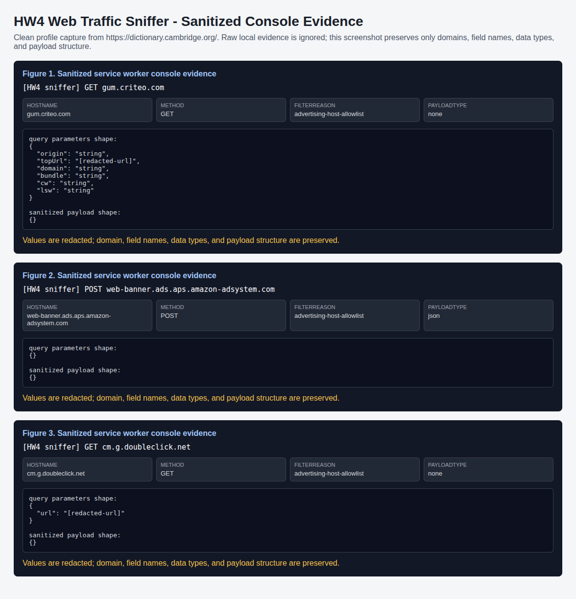

The extension uses Manifest V3 with a background service worker declared in
manifest.json. The manifest grants webRequest and
broad <all_urls> host permissions so the assignment can
observe outgoing browser requests during the Cambridge Dictionary scenario.
The broad host permission is controlled by code-level filtering in
background.js, so the console output focuses on advertising
traffic rather than general browser noise.
The service worker registers chrome.webRequest.onBeforeRequest
with the requestBody option. For each request, the code parses
the URL with new URL(details.url), rejects static resources such
as CSS, JavaScript, images, fonts, and maps, checks the hostname against the
advertising-network allowlist, and logs only requests with payload evidence
through a body or query parameters. Final evidence uses
DEBUG_MODE = false; debug mode is reserved for candidate-domain
discovery when the live ad stack changes.
The decoder handles multiple payload forms. It first accepts
requestBody.formData, then decodes raw byte chunks with
TextDecoder("utf-8"). It attempts JSON parsing, then
URL-encoded form parsing, and finally preserves a readable raw string when
the data is not structured. Query parameters are logged separately so
requests with empty bodies still provide readable evidence.
Figure 1 shows a Criteo-family request, Figure 2 shows an Amazon ad-system request, and Figure 3 shows another ad-tech family. These outputs were captured from the extension service worker in normal mode while navigating Cambridge Dictionary in the clean profile.

| Figure | Receiver | Payload evidence | Interpretation |
|---|---|---|---|
| 1 | gum.criteo.com |
Query fields including origin, topUrl, domain, and bundle |
Criteo receives page-context and auction-related request data from the browser session. |
| 2 | web-banner.ads.aps.amazon-adsystem.com |
JSON request body decoded by the extension runtime | Amazon ad-system receives a structured ad request during the Cambridge Dictionary page visit. |
| 3 | cm.g.doubleclick.net |
Query field url with value redacted as a URL |
Additional ad-tech traffic appears beyond the two examples in the PDF, supporting the allowlist-plus-discovery strategy. |
The observed traffic shows that advertiser and ad-tech endpoints can receive page context, request timing, hostnames, and structured payload fields while a user browses a dictionary site. Even when the visible page is not a login page, these fields can support interest profiling, cross-site correlation, and inference about lookup topics or browsing behavior. If stable identifiers, cookies, or session IDs were exposed together with these fields, the receiver could connect the dictionary visit to a broader advertising profile.
The screenshots redact values that may identify the user or browser. The remaining field names and data-type shapes are sufficient to show the privacy risk: third-party advertising infrastructure receives structured signals about the page context and the browser's ad auction activity.
HTTPS protects traffic while it travels across the network. It prevents an ordinary network observer from reading or modifying the encrypted request in transit. A browser extension with the proper permission is a different security boundary. It runs inside the browser's extension architecture and can observe request metadata and request bodies through browser APIs before the network attacker model is the relevant layer.
Therefore, this extension is not breaking HTTPS encryption on the wire. HTTPS remains useful for transport confidentiality, while extension permissions create a browser-internal observation path that must be governed separately.
Content Security Policy controls what a web page may load or execute in the page context. Browser extensions operate under a separate permission model controlled by the browser. When the user grants an extension broad host or webRequest permissions, extension APIs and content scripts can observe or interact with browser/page state in ways that are not equivalent to ordinary website JavaScript.
The correct framing is not that CSP is simply broken. The relevant boundary is extension privilege governance: permissions, extension review, user approval, enterprise policy, and least-privilege design.
A malicious extension could perform form-data capture. With broad host permissions and request-observation APIs, the extension could collect submitted form fields or request payloads before they leave the browser. Similar abuse patterns include cookie theft, keylogging through content scripts, and ad injection.
Mitigations should focus on least privilege and extension governance: review requested permissions, avoid unnecessary broad host access, use extension allowlists on managed systems, separate sensitive browsing into dedicated profiles, remove unused extensions, and prefer reputable publishers with transparent source or review history.